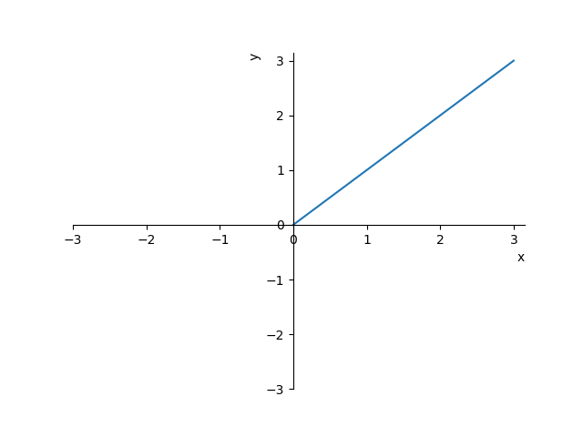
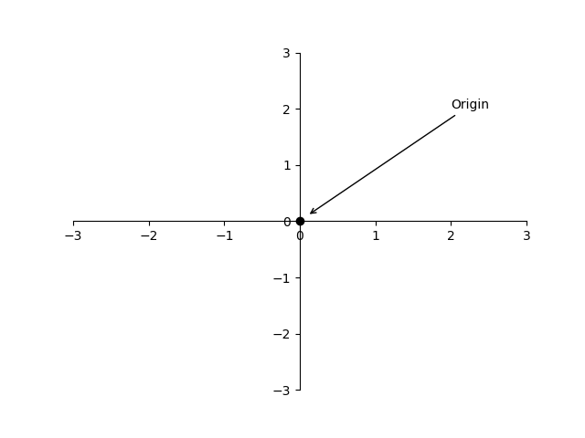
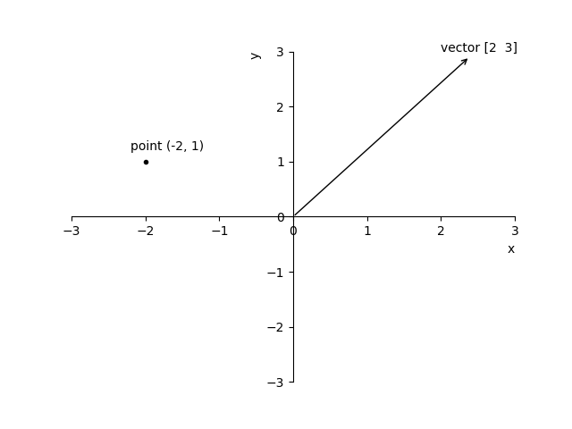

- Understanding vector from physics, computer scientist, and mathematicians’ perspective.
- Representation and description of coordinate system in 2 dimensions (2D) and 3 dimensions (3D).
The fundamental, root-of-it-all building block for linear algebra is the vector, so it's \worth making sure that we're all on the same page about what exactly a vector is. You see, broadly speaking there are three distinct but related ideas about vectors, which I'll call the physics student perspective, the computer science student perspective, and the mathematician's perspective.
The physics student perspective is that vectors are arrows pointing in space (Figure 1). What defines a given vector is its length, and the direction it's pointing in, but as long as those two facts are the same, you can move it all around and it's still the same vector. Vectors that live in the flat plane are two-dimensional (only back and forth movement (Figure 2)), and those sitting in broader space that you and I live in are three-dimensional (can move back and forth AND up and down (Figure 3)).
 Figure 1.
Figure 1.
The computer science perspective is that vectors are ordered lists of numbers. For example, let's say that you were doing some analytics about house prices, and the only features you cared about were square footage and price. You might model each house with a pair of numbers Figure 4: the first indicating square footage, and the second indicating price. Figure 5 Notice that the order matters here. In the lingo, you'd be modeling houses as two-dimensional vectors, where in this context, "vector" is pretty much just a fancy word for "list", and what makes it two-dimensional is the fact that the length of that list is 2. Information about house size and price is saved in a vector aka list.

 Figure 4. Figure 5.
Figure 4. Figure 5.
The mathematician, on the other hand, seeks to generalize both of these views, basically saying that a vector can be anything where there's a sensible notion of adding two vectors, and multiplying a vector by a number, operations that we will discuss later. The details of this view are rather abstract, and it's healthy to ignore it until the last chapter of this course, favoring a more concrete setting in the interim, but the reason that why it is here is that it hints at the fact that ideas of vector addition and multiplication by numbers will play an important role throughout linear algebra.
But before talking about those operations, let's just settle in on a specific thought to have in mind when you hear the word "vector". Given the geometric focus that I'm shooting for here, whenever I introduce a new topic involving vectors, I want you to first think about a arrow—and specifically, think about that arrow inside a coordinate system, like the x-y plane, with its tail sitting at the origin (Figure 6). This is a little bit different from the physics student perspective, where vectors can freely sit anywhere they want in space. In linear algebra, it's almost always the case that your vector will be rooted at the origin. Then, once you understand a new concept in the context of arrows in space, we'll translate it over to the list-of-numbers point-of-view, which we can do by considering the coordinates of the vector.

Figure 6
Now while I'm sure that many of you are familiar with this coordinate system, it's worth walking through explicitly, since this is where all of the important back-and-forth happens between the two perspectives of linear algebra. Focusing our attention on two dimensions for the moment, you have a horizontal line, called the x-axis, and a vertical line, called the y-axis. The place where they intersect is called the origin, which you should think of as the center of space and the root of all vectors Figure 7. After choosing an arbitrary length to represent 1, you make tick-marks on each axis to represent this distance.

Figure 7
To distinguish vectors from points, the convention is to write this pair of numbers vertically with square brackets around them. Every pair of numbers gives you one and only one vector, and every vector is associated with one and only one pair of numbers.

Figure 9.
What about in three dimensions? Well, you add a third axis, called the z-axis, which is perpendicular to both the x- and y-axes, and in this case each vector is associated with an ordered triplet of numbers: the first tells you how far to move along the x-axis, the second tells you how far to move parallel to the y-axis, and the third one tells you how far to then move parallel to this new z-axis. Every triplet of numbers gives you one unique vector in space, and every vector in space gives you exactly one triplet of numbers.